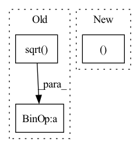

Pattern ID :2278

Before Change
maxlen, batch_size = src.shape[0], src.shape[1] // src.shape = [215, 128, 72]
Question: why 72 features (36 feature + 36 mask)?
src = self.encoder(src) * math.sqrt(self.d_model) // linear layer: 72 --> 32
pe = self.pos_encoder(times) // times.shape = [215, 128], the values are hours.
// pe.shape = [215, 128, 32]
After Change
// feed through MLP
output = torch.cat([output, emb], dim=1) // x.shape: [216, 128, 64]
output = self.mlp(output) // two linears: 64-->64-->2
return output, 0, 0
// class HGT_latconcat(nn.Module):
// ""
// Implement the raindrop stratey one by one.
In pattern: SUPERPATTERN
Frequency: 3
Non-data size: 3
Instances
Fragment ID: 7934649
Project Name: mims-harvard/raindrop
Commit Name: 374ec29c5d9a02d9eea95cf7e681df1b9996406c
Time: 2021-09-15
Author: xiang.alan.zhang@gmail.com
File Name: code/models_rd.py
M Class Name: TransformerModel2
N Class Name: TransformerModel2
M Method Name: forward(5)
N Method Name: forward(5)
M Parent Class: nn.Module
N Parent Class: nn.Module
M File Name: code/models_rd.py
N File Name: code/models_rd.py
M Start Line: 215
M End Line: 251
N Start Line: 215
N End Line: 258
'>
Before Change
src_embedding = src_embedding + src_embedding_p
tgt_embedding = tgt_embedding + tgt_embedding_p
scores = torch.matmul(src_embedding.transpose(2, 1).contiguous(), tgt_embedding) / math.sqrt(self.emb_dims)
scores = torch.softmax(scores, dim=2)
// b x points x points
feat1_corr = torch.matmul(feat2, scores.transpose(2, 1).contiguous())
rotation_ab, translation_ab = self.head(feat1, feat1_corr)
After Change
src = src.transpose(1,2).contiguous()
tgt = tgt.transpose(1,2).contiguous()
batch_size, _, _ = src.size()
src_embedding = self.emb_nn(src)
tgt_embedding = self.emb_nn(tgt)
'>
Fragment ID: 7934648
Project Name: paul007pl/mvp_benchmark
Commit Name: cb5622fec6ad947b57a83033563a402533978c61
Time: 2021-07-12
Author: panliang_de2007@qq.com
File Name: registration/models/dcp.py
M Class Name: Model
N Class Name: Model
M Method Name: forward(5)
N Method Name: forward(5)
M Parent Class: nn.Module
N Parent Class: nn.Module
M File Name: registration/models/dcp.py
N File Name: registration/models/dcp.py
M Start Line: 270
M End Line: 294
N Start Line: 394
N End Line: 425
'>
Before Change
Normalized audio tensor with same shape as input
mean = audio.mean(1, keepdim=True).detach()
std = (audio.var(1, keepdim=True).detach() + self.div_guard).sqrt()
return (audio - mean) / std
After Change
).int()
return (
normalize_tensor(audio, attention_mask, div_guard=self.div_guard),
audio_lengths,
)
'>
Fragment ID: 7934647
Project Name: scart97/thunder-speech
Commit Name: 05cbe02b3779b4bafc6dbd1914e490e47893b6da
Time: 2021-11-30
Author: scart.lucas@gmail.com
File Name: src/thunder/wav2vec/transform.py
M Class Name: Wav2Vec2Preprocess
N Class Name: Wav2Vec2Preprocess
M Method Name: forward(3)
N Method Name: forward(2)
M Parent Class: nn.Module
N Parent Class: nn.Module
M File Name: src/thunder/wav2vec/transform.py
N File Name: src/thunder/wav2vec/transform.py
M Start Line: 29
M End Line: 31
N Start Line: 30
N End Line: 49